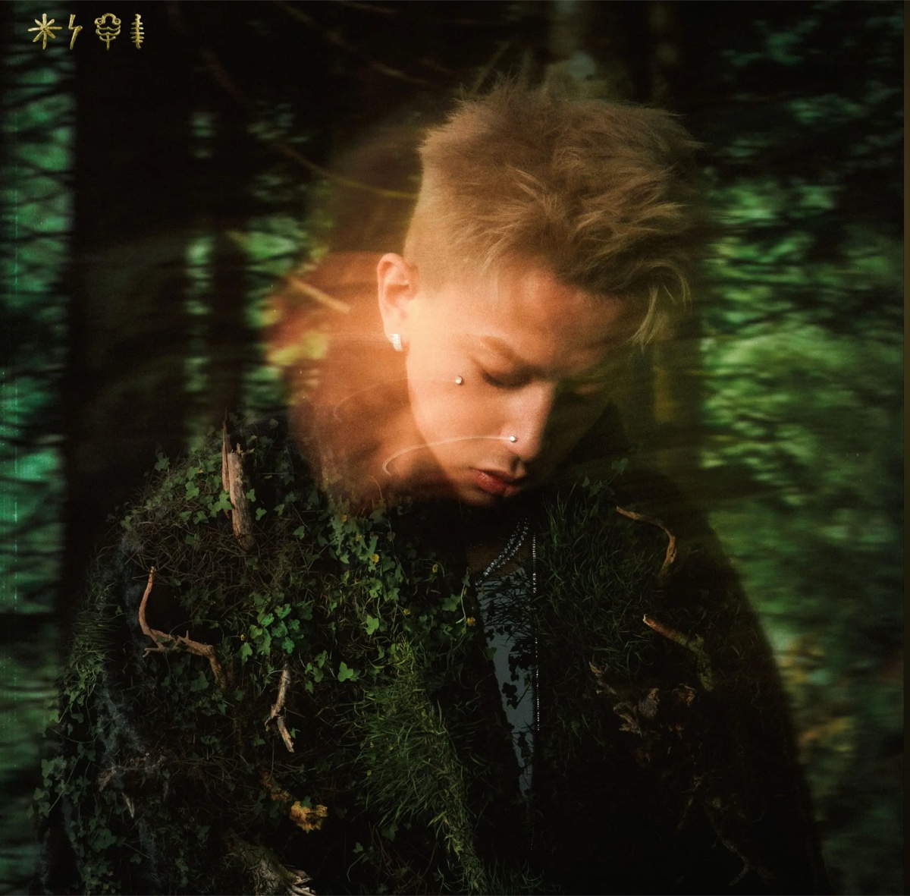

01 / 玄鸟CASH TRIPPY
听这首歌 ↗玄鸟
CashTrippy · 万古
ON REPEAT / 我的耳机里
两首想放进这个空间里的歌。戴上耳机，一起听听。
01 / THIS IS ME · 认识陈奕洁
你好，很高兴在这里遇见你。
我是陈奕洁。运动的时候喜欢出汗，开局的时候也挺认真。
平常喜欢健身、打篮球，也喜欢打网游。三角洲、CSGO、瓦罗兰特都玩过。大学学的是汽车检测与维修，也做过几份不一样的工作。
这里放着我的兴趣、走过的经历，以及一些吸引过我的画面。希望你逛完以后，能多认识我一点。
GYM, BASKETBALL & ONE MORE GAME
健身、打篮球，都是我的日常。离开屏幕的时候，运动是我喜欢的另一种节奏。
游戏也没少玩：三角洲、CSGO、瓦罗兰特都玩过。确实是个挺爱打游戏的人——用我自己的话说，网瘾比较大，哈哈。
健身房里练一练，球场上打一场。
健身 / 篮球爱打 FPS，也享受和朋友一起开局。
三角洲 / CSGO / 瓦罗兰特DIFFERENT CHAPTERS, SAME ME
学过汽车，也体验过不同的工作。这些都是我走过的章节。
A FEW MOMENTS OF MINE
湖边的一张背影，夕阳下的一次回头。除了自我介绍，也想让这里有一点真实生活的气息。
VISUAL INSPIRATION
从我的素材文件夹里挑出来的收藏。它们是视觉灵感，不是我的摄影作品。
LET’S CONNECT
聊健身、约篮球、聊游戏，或者分享一首好听的歌。